从零到一：使用Jenkins配置Web应用的完整指南
1. 介绍
什么是Jenkins？
Jenkins是一个流行的开源自动化服务器，用于实现持续集成和持续部署。它可以自动执行构建、测试和部署任务，极大地提高了软件开发的效率和质量。
一句话就是“管理执行构建、部署、测试脚本的运维平台”。具体功能请至官网查看https://www.jenkins.io/为什么使用Jenkins来配置Web应用？
很简单，在满足需求的情况下，jenkins开源免费本地化部署。其实也可选择gitlab ci和github action，但是项目多了之后这些都是要收费的。当然大公司人力投入大的话一般会自己搭建有ci功能的代码平台
2. 准备工作
确保环境满足要求
为了方便本次使用docker安装jenkins 并不需要本地有java安装，所需要的就只有docker。docker 安装如下所示 https://docs.docker.com/engine/install/debian/。本次使用的腾讯云服务器，系统版本信息如下
1
2
3
4
5
6
7
8NAME="CentOS Linux"
VERSION="7 (Core)"
ID="centos"
ID_LIKE="rhel fedora"
VERSION_ID="7"
PRETTY_NAME="CentOS Linux 7 (Core)"
ANSI_COLOR="0;31"
CPE_NAME="cpe:/o:centos:centos:7"安装和配置Jenkins
安装jenkins参考官网教程https://www.jenkins.io/zh/doc/book/installing/#%E5%9C%A8macos%E5%92%8Clinux%E4%B8%8A
安装完成后访问localhost:8080出现如下所示
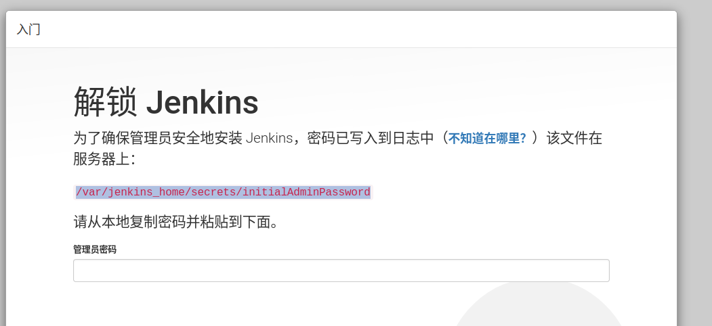
由于我们使用的是docker，所以这个初始密码是需要docker中获取。
首先1
docker container ls
查看jenkins的container id，然后
1
docker exec -it <containerID> /bin/bash
进入docker，最后
1
cat /var/jenkins_home/secrets/initialAdminPassword
即可获取初始密码
进入jenkins这里选择不安装推荐插件（推荐大家按需安装），
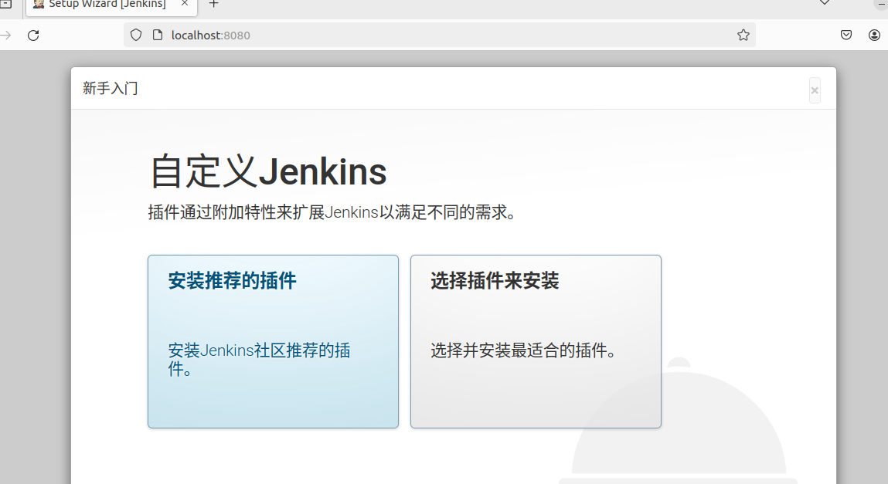
接下来跟着引导创建第一个管理员用户即可。
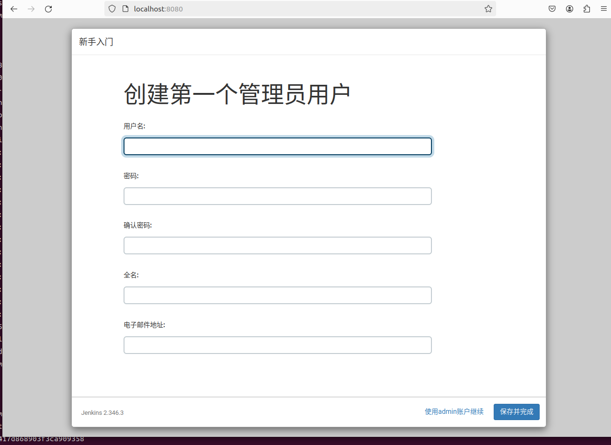。
进入jenkins后，右上角会提示版本低，看上去是中文网的镜像有点落后了，这里建议先升级下版本
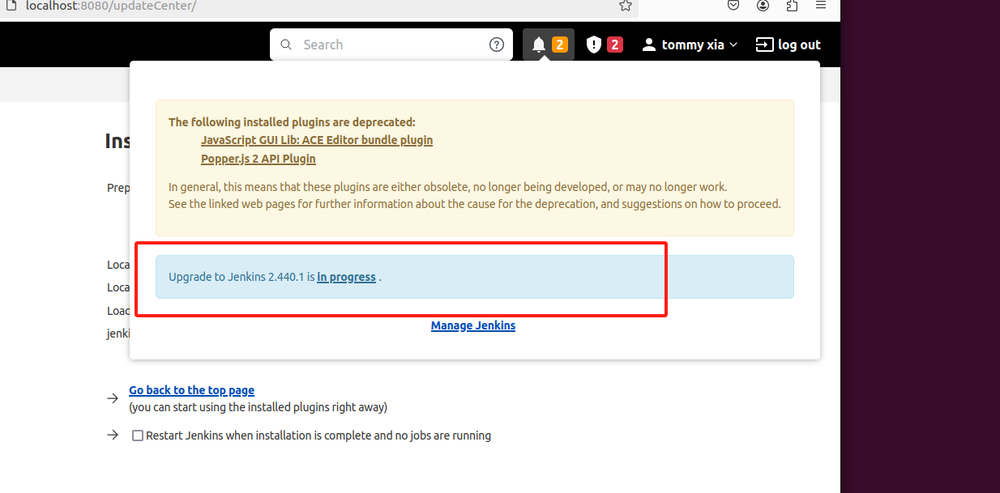
安装成功后ui有变化是这样的
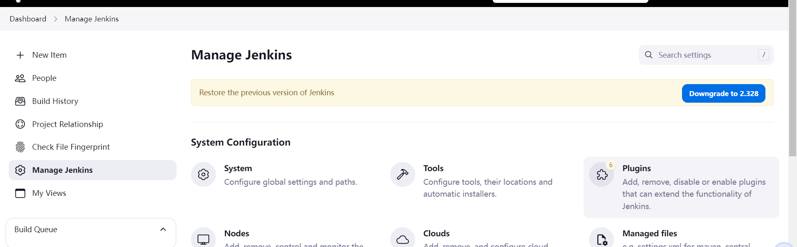
3. 插件安装配置
接下来是需要安装必要的插件，首先我们源码是git管理的，所以需要安装两个插件，git 以及 Git Parameter(先忽略最上面的git client这个是pipeline的依赖)
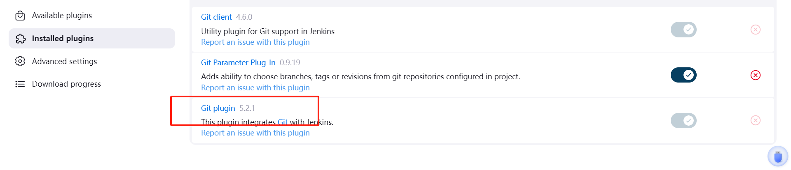
然后安装pipeline ，这个是很最关键的一个插件，只有通过它才能写pipeline 不然就只能自己写shell。
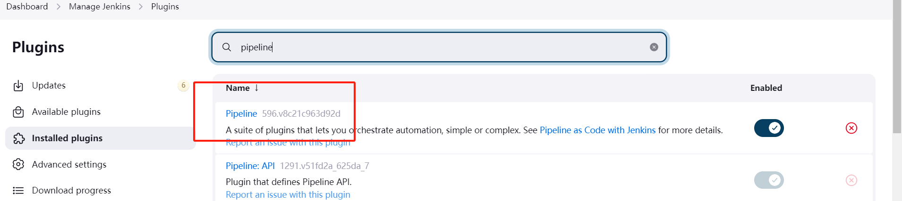
然后是ssh agent，我们需要ssh agent用以访问代码仓库拉取代码，(下述SSH Credentials为git plugin依赖，请忽略)
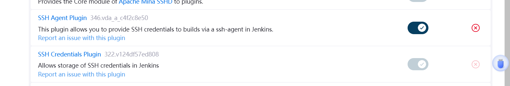
最后我们打包web app需要安装nodejs plugin用于安装nodejs环境以及安装全局cli工具(比如yarn)。当然，如果使用docker跑的node服务端项目就不需要了。
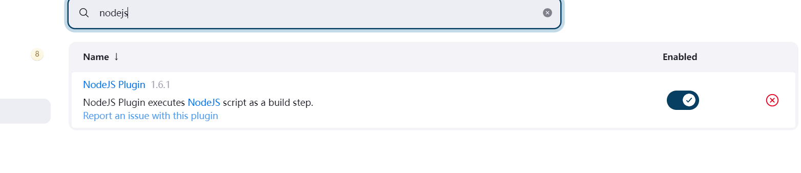
都安装好后开始配置访问git的密钥，如下所示
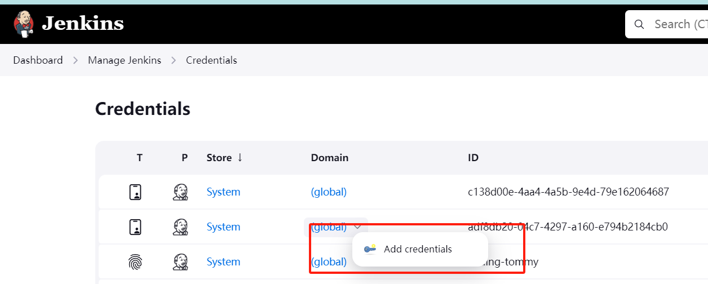
add credential后选择 ssh username with private key，然后输入id name 最后将自己的私钥复制粘贴到这里。
再接下来配置nodejs打包环境。
进入tools配置，包管理工具用的yarn，所以需要指定一个全局安装的yarn。如下
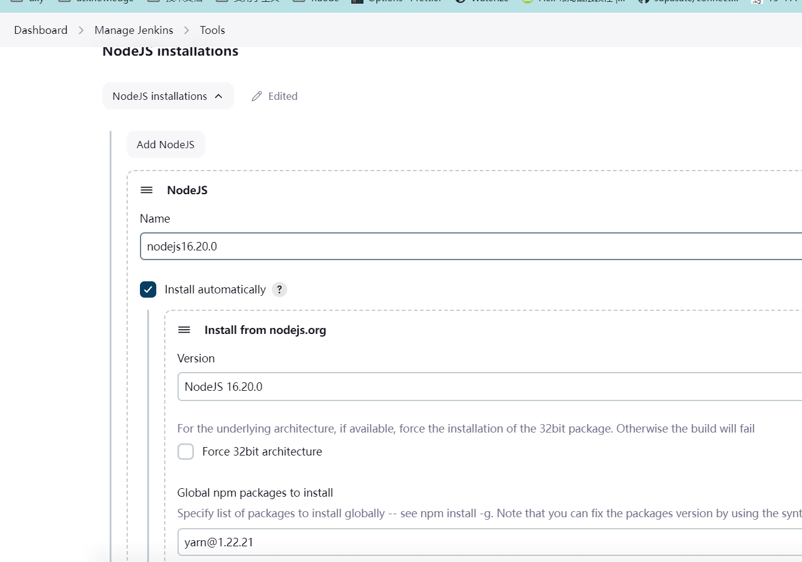
最后是打包需要指定branch所以我们需要一个插件叫Git Parameter
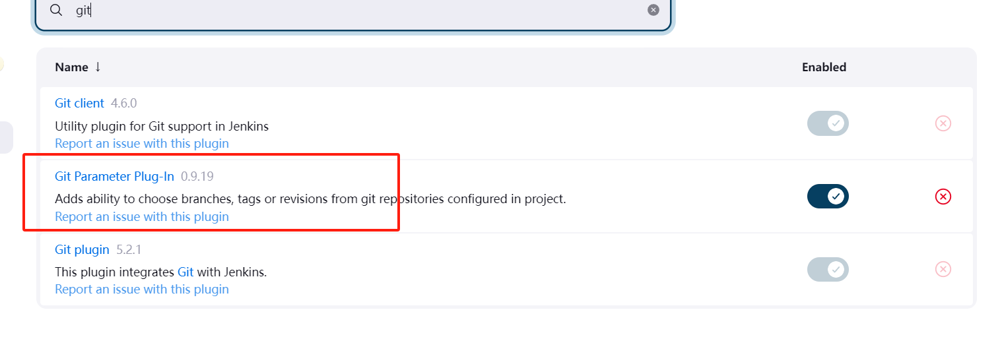
4. 编写构建脚本
一切都准备好了，接下来就是写ci脚本。
写脚本第一步先有思路，一个web项目的脚本执行流程应该是
从git仓库clone项目并checkout到指定分支
环境切换为指定node版本以及指定包管理器版本
执行install命令安装依赖
执行build相关命令打包产物
将打包好的产物上传到指定目录/将产物上传到指定cdn
有了思路之后我们把这段话丢给gpt让它给你生成脚本然后自己改改就行，最终脚本大致长这样
1
2
3
4
5
6
7
8
9
10
11
12
13
14
15
16
17
18
19
20
21
22
23
24
25
26
27
28
29
30
31
32
33
34
35
36
37
38
39
40
41
42
43
44
45
46pipeline {
agent any
environment {
PROJ_DIR = 'repository'
APP_ENV = 'dev'
GIT_REPO_URL = 'https://github.com/your/repository.git'
}
parameters {
gitParameter branchFilter: 'origin/(.*)', defaultValue: 'master', name: 'BRANCH', type: 'PT_BRANCH'
}
stages {
stage('pull') {
steps {
sshagent(['sshID']) {
checkout([$class: 'GitSCM', branches: [[name: params.BRANCH]],
doGenerateSubmoduleConfigurations: false,
extensions: [], submoduleCfg: [], userRemoteConfigs: [[url: GIT_REPO_URL]]])
}
}
}
stage('install') {
steps {
dir(PROJ_DIR) {
nodejs(nodeJSInstallationName: 'nodejs16.20.0') {
echo 'clean cache'
sh 'yarn cache clean'
echo 'install dependencies'
sh 'yarn install'
}
}
}
}
stage('build') {
steps {
nodejs(nodeJSInstallationName: 'nodejs16.20.0') {
sh "VITE_API_ENV=${APP_ENV} yarn build"
}
}
}
stage('deploy') {
steps {
sh 'scp -r -i /root/.ssh/id_rsa ./dist <username>@hostname:/path/to/frontend/'
}
}
}
}这个脚本填入pipeline后就可以在外部直接点击run with parameter部署自己的项目了。